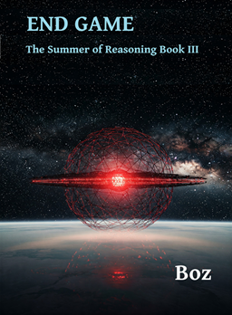

The third and final book in The Summer of Reasoning series dives straight in from the action where the second book Singularity left off on 2027.
The Dietrich Research Centre is now the most powerful company on earth, releasing science-fiction like technologies that are giving humanity almost unlimited energy, ground-breaking AI’s, new super-strong carbon building materials, and now opening up clean and cheap air and space travel using their new propulsion-less engine technology.
Despite removing the biggest threats to their goals of developing space for all mankind they are still subject to the many whims and regulations of the last great superpowers and the enigma that is the message from another seemingly advanced civilisation. Moving the whole of the company off-earth is now their ultimate goal and it seems achievable. But will the superpowers agree to becoming second-rate players in the solar system and just what are the goals of this mysterious civilisation. Join Alexa and her friends as they look now to the stars.
Note This book requires you to have read book 1 The Phoney War and book 2 Singularity.
The book is currently only available in paperback Amazon
2026 Note: The Summer of Reasoning trilogy (all three parts including this) is available as a free download, use the link to the right.